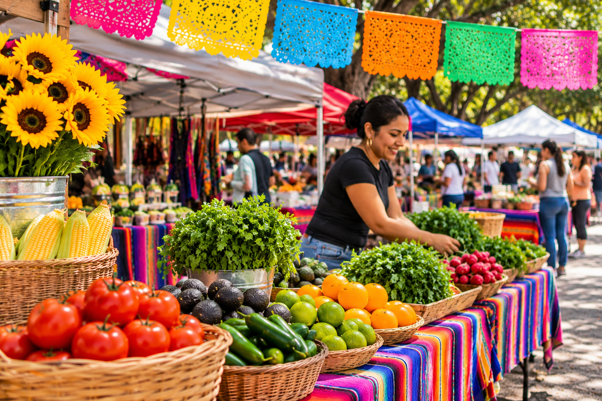
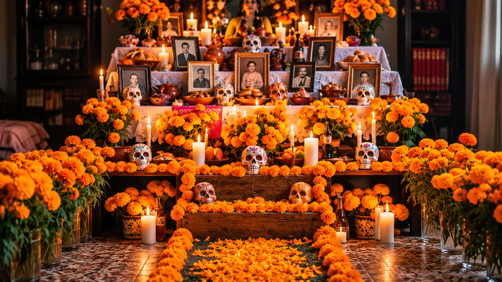
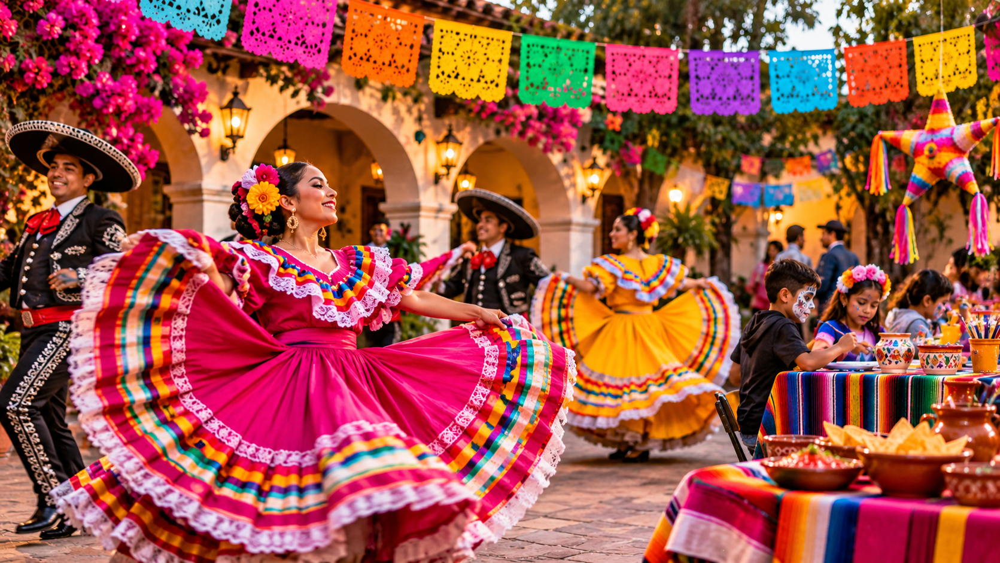

Local Attractions and Special Events
Enjoy exciting cultural activities and attractions during your stay at Casa Bonita Bed & Breakfast. Whether you enjoy exploring the outdoors, discovering local attractions, or attending seasonal events, there is something for everyone to enjoy!
Local Attractions
Guests staying at Casa Bonita Bed & Breakfast can explore local attractions that celebrate Hispanic culture and support small businesses. From food vendors to handmade crafts and authentic dishes, visitors can discover meaningful cultural experiences during their stay.

Farmers Markets
Visit local farmers markets featuring vendors who offer fresh fruits and vegetables, traditional Mexican foods, homemade baked goods, handmade jewelry, beautiful artwork, pottery, clothing and so much more. These markets allow visitors to learn about the traditions and craftmanship reflected in their products. They also provide guests with an opportunity to discover new flavors and experience the vibrant atmosphere of the community all while supporting local entrepreneurs.
Seasonal Events
Celebrate the rich hispanic culture and traditions through our exciting seasonal events! Guests can experience colorful celebrations, traditional foods, music, and activities throughout the year.

Dia de los Muertos (Day of the Dead)
Celebrated on November 1st and 2nd, Dia de los Muertos is a Mexican tradition honoring loved ones who have passed away. Visitors can learn about this meaningful celebration through colorful decorations, marigold flowers, traditional altars, artwork, and cultural displays. Guests may also explore local events featuring traditional Mexican food, music, and community gatherings.

Cinco de Mayo
Celebrated on May 5th, Cinco de Mayo commemorates Mexico's victory over French forces at the Battle of Puebla in 1862. Visitors can enjoy local festivities featuring Mexican cuisine, live music, folkloric dancing, and more cultural activities. Guests can explore nearby celebrations and experience the vibrant traditions and community spirit associated with this holiday.
Special Promotions
At Casa Bonita Bed & Breakfast, we want every guest to enjoy a comfortable and memorable experience. Explore our special promotions and seasonal offers designed to make your stay even more enjoyable.
Weekend Getaway Special
Treat yourself to a relaxing weekend at Casa Bonita Bed & Breakfast. Guests can enjoy a peaceful atmosphere and comfortable accomodations. This package is ideal for anyone looking to take a break from their everyday routine.
Holiday and Seasonal Specials
Celebrate special occasions with promotions inspired by the seasons and Hispanic cultural traditions. Guests planning a visit around Cinco de Mayo or Dia de los Muertos can look for special packages that complement these festivities.
Extended Stay Discount
Can't get enough of this relaxing stay? Worry no more, guests booking multiple nights may be eligible for an extended-stay discount. Enjoy additional time to explore local farmers markets, discover unique vendors, and experience the culture of the surrounding community.